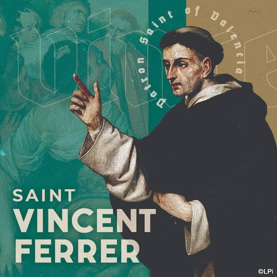
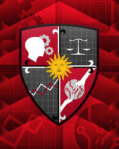
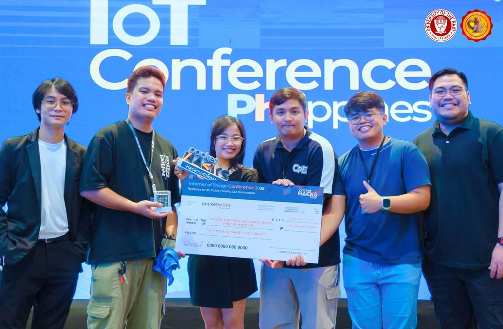

Dean
The CICS Community
Meet the people, student organizations, traditions, and activities that make CICS a welcoming Thomasian community.
Leadership
An elite administration dedicated to maintaining historical UST traditions while charting bold trajectories for next-generation technology education.
Regent
Rev. Fr. Gaspar Sigaya
Asst Dean
Assoc. Prof. Perla P. Cosme
Secretary
Inst. Edmund D. Tucay
Student Orgs
Find a group for your interests, program, faith, and campus involvement.
CNAG-IICS

Peer collaboration and academic activities for computing students.
CSS

Computer Science Society for coding, research, and community projects.
ISS

Information Systems Society connecting technology and business.
Pax Romana

Catholic student movement for faith, friendship, and service.
SITE
Society of Information Technology Enthusiasts for applied tech learning.

PATRON OF CICS
St. Vincent Ferrer
Feast Day: April 5
A Dominican friar and preacher remembered for scholarship, teaching, and a life dedicated to service.
For CICS, his example connects disciplined learning with clear communication and using knowledge in service of others.
Latest Updates

October 12, 2026
CICS Week 2027 Update
Students gathered for exhibits, games, and technology talks for a glimpse of the career path they want to pursue.
Read More
August 28, 2026
Hackathon Teams Announced
New student teams begin building solutions for campus life.
Read More
August 8, 2026
Community Extension Day
Volunteers shared basic digital skills with partner communities.
Read More